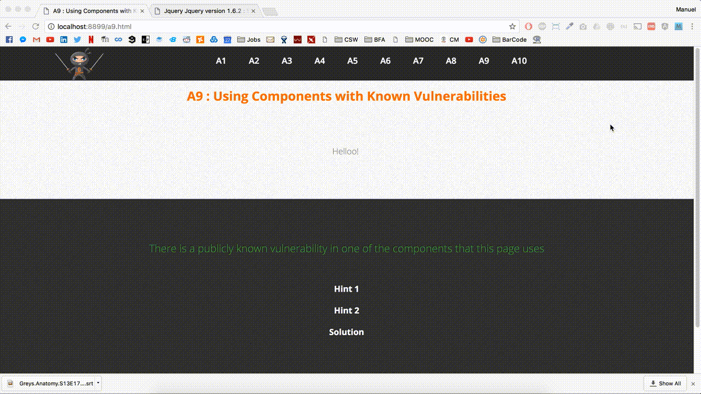

Using Components with Known Vulnerabilities
Very few web application projects are delivered using software completely written from scratch. Rather the modern application development model relies on frameworks, modules and components from various sources that are combined with custom written code to deliver the final product. Both commercial and free open source software components are regularly included in web application development projects. This approach makes sense. It means developers don’t have to write all the code needed to deliver the project. It also means that they don’t have to be experts in connectivity to the many external systems that modern web applications need to communicate with.
However, with these developer benefits come a few downsides. As a result of this approach to software development the popular third party components are very widely used. This means that they are known to anyone looking to attack a web application, and that any vulnerability discovered provides a rich target to exploit. Additionally many of the frameworks, modules and components that are incorporated into web application projects often run with raised privileges. A vulnerability in one of them can often provide access to other secure code and data within the application.
Component vulnerabilities can cause almost any type of risk imaginable, ranging from the trivial to sophisticated malware designed to target a specific organization. Components almost always run with the full privilege of the application, so flaws in any component can be serious, Here are some known examples:
- Apache CXF Authentication Bypass – By failing to provide an identity token, attackers could invoke any web service with full permission. (Apache CXF is a services framework, not to be confused with the Apache Application Server).
- Spring Remote Code Execution – Abuse of the Expression Language implementation in Spring allowed attackers to execute arbitrary code, effectively taking over the server.
- OpenSSL library. A software component often used to help secure data used by web applications. In 2014 the Heartbleed bug was discovered in OpenSSL.
Solving the riddle
This vulnerability is all about trying to find some external libraries or frameworks that might be vulnerable. So lets look at the Javascript libraries that are being used.
Looking at the imported libraries, we can see that jQuery version 1.6.1 is being used.
After a quick Google search, we can find out that this version of the jQuery framework is vulnerable to XSS attacks through the URL input.
Appending the string #<img src=x onerror=alert(1)> will allow the vulnerability to present itself.
Preventing this vulnerability
One option is not to use components that you didn’t write. But that’s not very realistic.
Most component projects do not create vulnerability patches for old versions. Instead, most simply fix the problem in the next version. So upgrading to these new versions is critical.
Tune your engineering processes so that you apply good practices like:
- Identify all components and the versions you are using, including all dependencies. (e.g., the versions plugin).
- Establish security policies governing component use, such as requiring certain software development practices, passing security tests, and acceptable licenses.
- Where appropriate, consider adding security wrappers around components to disable unused functionality and/ or secure weak or vulnerable aspects of the component.